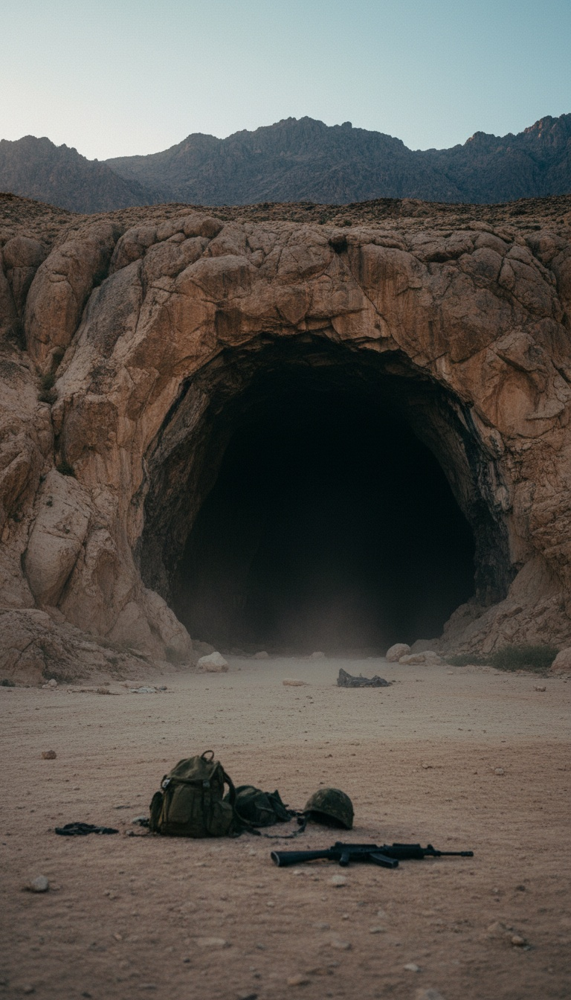

In 2002 a US special operations team walked into a cave in Kandahar province looking for a patrol that had stopped reporting in, and what came out of that cave left under a heavy-lift helicopter in a cargo net within twenty four hours.
Joe Rogan gave the story eleven minutes of airtime in 2013. The Department of Defense has never confirmed it. The Department of Defense has never denied it. And the man who pulled the trigger has never shown his face on camera. Those are three different things, and by the end of this article you will understand why the third one matters most.

Kandahar Province, 2002. A Patrol Goes Silent.
The account is specific. A US patrol in the mountains of Kandahar province missed its check-ins, and a special operations unit was sent up the trail to find it. What they found first was gear. Scattered equipment at the mouth of a cave at the base of a mountain, and no bodies to go with it.
Then something came out of the cave. The shooter puts it at twelve to fifteen feet tall, with red hair, a beard, and six fingers on each hand. It carried a bladed weapon the length of a man. It did not hesitate and it did not retreat. It charged.
One soldier, a man the team called Dan, was dead before the unit returned fire. The creature ran him through while the rest of the patrol emptied their rifles into it, aimed fire at the face, for a full thirty seconds before it dropped.
What happened next separates this from campfire talk. The team was ordered to sling the body in a cargo net. A heavy-lift helicopter arrived, took the load, and flew it out of the valley. Inside twenty four hours there was no body, no press release, and no incident report anyone can produce.
The Story Reaches a Microphone
Joe Rogan played the account on his podcast in 2013 and spent eleven minutes turning it over on air. Rogan does not need giants to fill airtime. He kept circling one detail. Soldiers do not invent a dead teammate.
In 2016 the researcher L.A. Marzulli tracked down the shooter and put him on camera for his Watchers documentary series, face obscured, voice altered, identified only as Mr. D. The interview reached millions more through Coast to Coast AM. Mr. D has never monetized the story, never written a book, never done a press tour. Men running a grift do the opposite of that.
Marzulli then found a second man. A helicopter crewman who says he was on the airframe that carried the load out of Kandahar, and who described a cargo net holding something far heavier than a man. Two witnesses, two different jobs, one flight.
One soldier was dead before the patrol fired a shot. The thing that killed him took thirty seconds of sustained rifle fire to the face before it went down.
Six Fingers Is Not a Detail You Invent
Focus on the hands, because the hands are the tell. A liar building a monster reaches for claws or fangs. Six fingers on each hand is a detail with a paper trail three thousand years long.
2 Samuel 21:20 describes a warrior of Gath, Goliath's own city, as a man of great stature with six fingers on every hand and six toes on every foot. Genesis 6:4 puts giants on the earth in the days before the flood and gives them a name. The Nephilim.
The trail runs past scripture. Six-toed footprints are cut into the sandstone at Pueblo Bonito in Chaco Canyon, New Mexico, carved by Ancestral Puebloans a thousand years ago, and site archaeologists have documented walls built around those prints to mark them. An American soldier in 2002 did not know any of that. He described it anyway.
Red Hair Keeps Showing Up in Caves
Red hair is the second tell. In 1911 guano miners digging out Lovelock Cave in Nevada broke into a chamber of artifacts and human remains, and the remains that came out of that cave had red hair.
The Paiute people of Nevada already had a name for them. The Si-Te-Cah, red-haired giants their oral history says lived in caves and were finally trapped and burned inside Lovelock Cave itself. The Humboldt Museum in Winnemucca, Nevada held skulls from the Lovelock excavations in its collection for decades.
Count the pattern. Nevada caves, red hair, native legend. Kandahar caves, red hair, Pashtun legend. Two cave systems on opposite sides of the planet, two peoples who never met, one identical description.
The Pashtun Named It Before America Existed
The giant of Afghan legend is called Nimr. Pashtun elders in Kandahar province tell of creatures that live in the mountain caves, twelve feet tall, six fingers on each hand, hair the color of rust. The stories go back centuries before the first American boot touched that soil.
The terrain backs the stories. The mountains of eastern and southern Afghanistan are honeycombed with cave networks like Tora Bora and Zhawar Kili, systems so deep the US Air Force spent 2001 and 2002 dropping bunker-busting ordnance into them without ever mapping the bottom. Whole chambers in those ranges have never held a human light.
So the soldiers clearing those caves in 2002 were walking into the one environment on the planet their maps could not help them with, in the exact province where the locals had spent centuries warning about what lived inside.
The Pentagon Has No Record. Read That Again.
When researchers pressed the Department of Defense on the Kandahar incident, the answer that came back was that no record of such an operation exists. Sit with the wording. Not false. Not fabricated. No record.
No record is the natural filing status of a classified special operations action from 2002. JSOC cave-clearing missions from that period remain sealed to this day, and flight logs for heavy-lift airframes in theater have never been released. An operation that does not officially exist generates exactly this answer, word for word.
And there is the soldier. The account says one man died at the mouth of that cave. The casualty rosters from Afghanistan in 2002 list every cause of death exactly as the military chose to report it, and every family was told what the military chose to tell them. Mr. D says the man who died that day is recorded under a cause of death that is not a fifteen-foot blade.
So track the body. A cargo net leaves Kandahar under a heavy-lift helicopter in 2002 and lands somewhere. Loads out of that theater moved through Bagram, and cargo of special interest has one historical destination after that. Wright-Patterson Air Force Base in Dayton, Ohio. The same installation that received the Roswell debris in 1947.
Rogan asked his question in 2013 and got silence back. So I am asking mine here. Somewhere out there is a team of operators who signed papers and went home, and one family who buried a soldier under a cause of death someone else wrote. If you were in Kandahar province in 2002, the comments are open. The first man through the door already spoke. Who was second?
Before you go
7 books the Vatican doesn't want you reading. Free PDF — the texts they cut, with sources. Joined by 140+ Inner Circle members.
No spam. Unsubscribe anytime.
Go deeper
The Hidden Canon, Vol. I — Enoch. Jubilees. Thomas. Mary. Judas. 90 pages, 14 chapters, every receipt cited. The books your Bible quietly removed.
Read the Canon →Books that informed this investigation
As an Amazon Associate, Hidden Epoch earns from qualifying purchases. Cost to you: nothing.
Research safely
The VPN we use to research without being tracked. First 3 months free.
Get NordVPN →